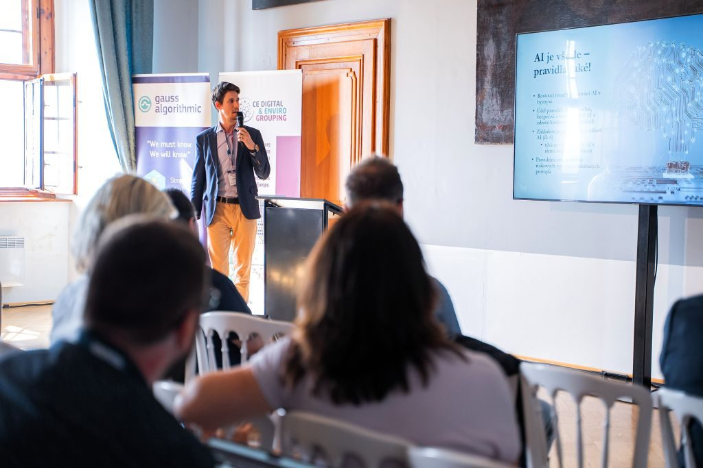

Law and Technology in the Heart of Moravia: A Report from the Czech-Slovak Technology Summit
This report dates from the time I was a partner at the IUSTORIA law firm.
On Tuesday, June 4, 2025, Mikulov Castle came alive with the inspiring atmosphere of the Czech-Slovak Technology Summit. It was a unique opportunity for leaders from technology, business, and law to meet and discuss the future that affects us all. Our law firm, IUSTORIA, was a proud partner of this event, and I had the honor of contributing to the program with a presentation on the current topic of "AI Regulation in the CR."


AI Regulation: A Brake or a Catalyst for Innovation?
My presentation focused on the practical impacts of the European AI Act (EU Regulation No. 2024/1689) on Czech and Slovak companies. The goal was not to scare with complex paragraphs but to show that, when properly understood, regulation can be a strategic advantage for business. We covered key points:
A Risk-Based Approach
We explained that the AI Act does not burden everyone equally. The greater the potential impact a system can have on health, safety, or fundamental rights, the stricter the rules that apply to it. We discussed the categories from unacceptable risk (e.g., social scoring), through high-risk systems (e.g., in HR or healthcare), to the most common tools with limited risk.
Transparency as the Foundation of Trust
For most companies using AI for marketing or communication, the key obligation is transparency. We emphasized why it is crucial to clearly inform users that they are interacting with a chatbot and how to properly label artificially generated content, so-called "deepfakes," to avoid misleading consumers.
Responsibility in Practice and Data Protection
We discussed that the responsibility for using an AI system lies with the end-user – the company that deployed it. I also mentioned the inseparable link with GDPR. Inputting personal or sensitive company data into publicly available tools is a huge risk that must be prevented by correctly setting up internal processes and using secure enterprise solutions.
"What pleased me most was the subsequent discussion. It was great to see that companies are not thinking of regulation as a threat, but as an opportunity to build trust with their customers and partners. That is exactly the right approach."


Meetings That Inspire
The entire day was filled with networking, sharing experiences, and forming new partnerships. The Czech-Slovak Technology Summit once again confirmed that connecting two close markets has enormous sense and potential. I thank the organizers for a perfectly prepared event and all the attendees for the stimulating conversations. I am already looking forward to next year!
← Back to Blog Articles